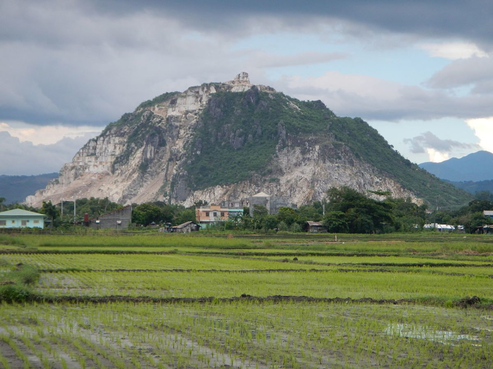

E. Rodriguez Avenue in Rizal, Philippines, is located within a seismically active region.
The entire Philippines is situated along the Pacific Ring of Fire,
which is known for its tectonic activity and is prone to earthquakes and volcanic eruptions.
Therefore, like many other areas in the country,
E. Rodriguez Avenue in Rizal is also considered to be at risk of earthquakes.
Low-lying areas near the Marikina River, San Mateo River,
and their tributaries are prone to flooding,
particularly during heavy rainfall and typhoon events.
Antipolo City in Rizal, Philippines,
is prone to earthquakes due to its location in the seismically active Pacific Ring of Fire
and its proximity to active fault lines,
such as the West Valley Fault.
Some areas near the Hinulugang Taktak National Park, Marikina River,
and its tributaries are prone to flooding during heavy rainfall or typhoons.

San Mateo has hilly terrain, increasing the risk of landslides,
particularly in areas with steep slopes and loose soil.
Some areas near the Marikina River, Manggahan Floodway,
and its tributaries are susceptible to flooding during heavy rainfall or typhoon events.
San Mateo, Rizal, Philippines, is located within a seismically active region.
Similar to other areas in the Philippines, San Mateo is situated along the Pacific Ring of Fire, which is known for its tectonic activity,
including earthquakes and volcanic eruptions.
Therefore, San Mateo is considered to be at risk of earthquakes.
Cardona
Low-lying areas near the Manggahan Floodway, Marikina River,
and its tributaries are susceptible to flooding during heavy rainfall or typhoon events.
Certain areas near the Laguna de Bay shoreline, Manggahan Floodway, and its
tributaries are at risk of flooding during heavy rains and typhoons.

Some areas near the rivers and creeks in Agono can experience
flooding during heavy rainfall or typhoon events.
Agono has hilly terrain, which increases the risk of landslides,
especially in areas with steep slopes and loose soil.

Low-lying areas near the Laguna de Bay shoreline, rivers, and creeks in Teresa
are susceptible to flooding during heavy rains or typhoons.

Low-lying areas near the Laguna de Bay shoreline, rivers, and creeks in Teresa
are susceptible to flooding during heavy rains or typhoons.
Teresa has hilly areas where landslides can occur,
particularly in areas with steep slopes and loose soil.
Low-lying areas near the Tanay River, Sierra Madre Mountain Range, and their tributaries can
experience flooding during heavy rainfall and typhoon events.

Some areas near the rivers and creeks in Pililla can
experience flooding during heavy rainfall or typhoon events.
Pililla has hilly areas where landslides can occur,
particularly in areas with steep slopes and loose soil.

Jala Jala is prone to flooding, particularly in low-lying areas near the rivers, creeks,
and Laguna de Bay shoreline during heavy rainfall or typhoon events.
Jala Jala has hilly terrain, which increases the risk
of landslides, especially in areas with steep slopes and loose soil.
Like other areas in Rizal Province, Jala Jala can experience earthquakes
due to its proximity to the seismically active region.
Low-lying areas near the Laguna de Bay shoreline, rivers, and creeks
in Binangonan are susceptible to flooding during heavy rains or typhoons.
Being a coastal municipality along Laguna de Bay, Binangonan is also
vulnerable to storm surges during typhoons or strong cyclones.
Certain low-lying areas near the Laguna de Bay shoreline, Cardona River, and its tributaries are
prone to flooding, especially during heavy rains or typhoons.
Being a coastal municipality, Cardona is vulnerable to storm surges during typhoons
or strong cyclones. Coastal communities should be aware of this hazard.